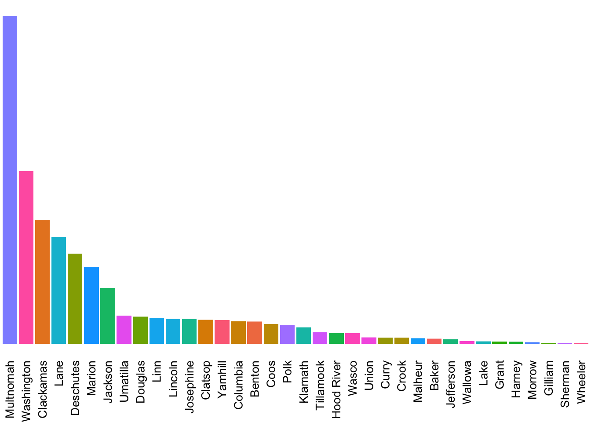

Show Code
or_sales <- read.csv('/Users/rochellerafn/RStudio_Files/liquor-analysis/OR-Liquor-Sales-Store.csv')
# Formatting the 'Month' column with lubridate so that ggplot will recognize the colunn as a month and order chronogically and not alphabetically.
or_sales <- or_sales %>%
mutate(Month = month.name[Month], Year = as.character(Year))
or_sales$Month = factor(or_sales$Month, levels = month.name)
# Creating a table that focuses on the total sales by month and year.
or_sales_yearly <- or_sales %>%
group_by(Year, Month) %>%
summarize(sum(Total.Sales))
or_sales_yearly <- or_sales_yearly %>%
rename("Total.Sales" = "sum(Total.Sales)")There is a striking consistency to the seasonality of liquor sales year over year.
Show Code
library(MetBrewer)
devtools::install_github("BlakeRMills/MetBrewer")
or_sales_yearly %>%
filter(Year < 2023) %>%
ggplot(aes(Month, Total.Sales, group = Year, color = Year)) +
geom_line(stat = "identity")+
scale_y_continuous(labels = scales::comma)+
theme(panel.background = element_blank(),
plot.background = element_blank(),
axis.text.x = element_text(angle = 90, vjust = 0.5, hjust=1))+
scale_color_met_d("Klimt")+
labs(title = "Seasonality of Oregonian's Liquor Consumption is Consistent",
subtitle = "Total Liquor Sales in Oregon",
y = "Total Sales (in dollars)")Sales for liquor in Oregon is continuing to grow year over year.
Show Code
or_sales_yearly %>%
filter(Year < 2023) %>%
ggplot(aes(Year, Total.Sales, fill = Year, color = Year))+
geom_col(stat = "identity")+
scale_y_continuous(labels = scales::comma)+
theme(panel.background = element_blank(),
plot.background = element_blank())+
scale_fill_met_d("Klimt")+
scale_color_met_d("Klimt")+
labs(y = "Total Sales (in dollars)")Show Code
# Creating a table focused on total sales by store location
or_store_sales <- or_sales %>%
group_by(Year, Month, BusinessName) %>%
summarize(sum(Total.Sales))
or_store_sales <- or_store_sales %>%
rename("Total.Sales" = "sum(Total.Sales)") %>%
arrange(desc(Total.Sales))
# Creating a table focused on total sales by county
or_county_sales <- or_sales %>%
group_by(Year, Month, COUNTY) %>%
filter(Year < 2023) %>%
summarize(sum(Total.Sales))
or_county_sales <- or_county_sales %>%
rename("Total.Sales" = "sum(Total.Sales)") %>%
arrange(desc(Total.Sales))Looking at total liquor sales by county
Show Code
or_county_sales %>%
ggplot(aes(reorder(COUNTY, -Total.Sales), Total.Sales, fill = COUNTY)) +
geom_col()+
scale_y_continuous()+
theme_void()+
theme(legend.position = "none",
axis.text.x = element_text(angle = 90, vjust = 0.5, hjust=1, size = 5))+
facet_wrap(~Year)
Show Code
# Bringing in an olcc spreadsheet that specifies number of units sold and sales broken down by liquor type
product_sales_2020 <- readxl::read_xlsx('/Users/rochellerafn/RStudio_Files/liquor-analysis/Product-Sales-Data-CY2020.xlsx', sheet = "750 ml")
# Cleaning up column names
colnames(product_sales_2020)[4] = "Units_Sold"
colnames(product_sales_2020)[5] = "Units_Price"
# Creating a columnn for total sales (number of units * approximate price)
product_sales_2020 <- product_sales_2020 %>%
mutate(Total_Sales = Units_Sold * Units_Price)Categories of Liquor Type
Show Code
# Different liquor categories
unique(product_sales_2020$Category) [1] "VODKA" "IRISH" "CANADIAN"
[4] "DOMESTIC WHISKEY" "RUM" "CORDIALS"
[7] "TEQUILA" "BRANDY / COGNAC" "GIN"
[10] "NEUTRAL GRAIN SPIRIT" "COCKTAILS" "SCOTCH"
[13] "OTHER IMPORTED WHISKY" "CACHACA" NA Show Code
# Grouping Category so I can analyze total sales by liquor type
product_total_sales_2020 <- product_sales_2020 %>%
group_by(Category) %>%
summarize(sum(Total_Sales))
product_total_sales_2020 <- product_total_sales_2020 %>%
rename("Total_Sales" = "sum(Total_Sales)") %>%
arrange(desc(Total_Sales))Total sales revenue by liquor type in 2020
Show Code
ggplot(product_total_sales_2020, aes(reorder(Category, -Total_Sales), Total_Sales, group = Category, fill = Category))+
geom_col(stat = "identity")+
scale_y_continuous(labels = scales::comma)+
theme(panel.background = element_blank(),
plot.background = element_blank(),
legend.position = "none")+
scale_fill_met_d("Signac")+
labs(y = "Total Sales (in dollars)",
x = "Liquor Type")+
theme(axis.text.x = element_text(angle = 90, vjust = 0.5, hjust=1))
Show Code
# Focusing on total number of units sold by liquor type
product_total_count_2020 <- product_sales_2020 %>%
group_by(Category) %>%
summarize(sum(Units_Sold))
product_total_count_2020 <- product_total_count_2020 %>%
rename("Total_Units_Sold" = "sum(Units_Sold)") %>%
arrange(desc(Total_Units_Sold))Number of units sold in 2020 by liquor type
Show Code
ggplot(product_total_count_2020, aes(reorder(Category, -Total_Units_Sold), Total_Units_Sold, group = Category, fill = Category))+
geom_col(stat = "identity")+
scale_y_continuous(labels = scales::comma)+
theme(panel.background = element_blank(),
plot.background = element_blank(),
legend.position = "none")+
scale_fill_met_d("Signac")+
labs(y = "Total Units Sold",
x = "Liquor Type")+
theme(axis.text.x = element_text(angle = 90, vjust = 0.5, hjust=1))